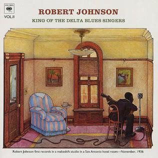

King of the Delta Blues Singers, Vol. II is a compilation album by American blues musician Robert Johnson, released in 1970 by Columbia Records. In 2003, the album was ranked number 424 on Rolling Stone magazine's list of the 500 greatest albums of all time.
(from Wikipedia)